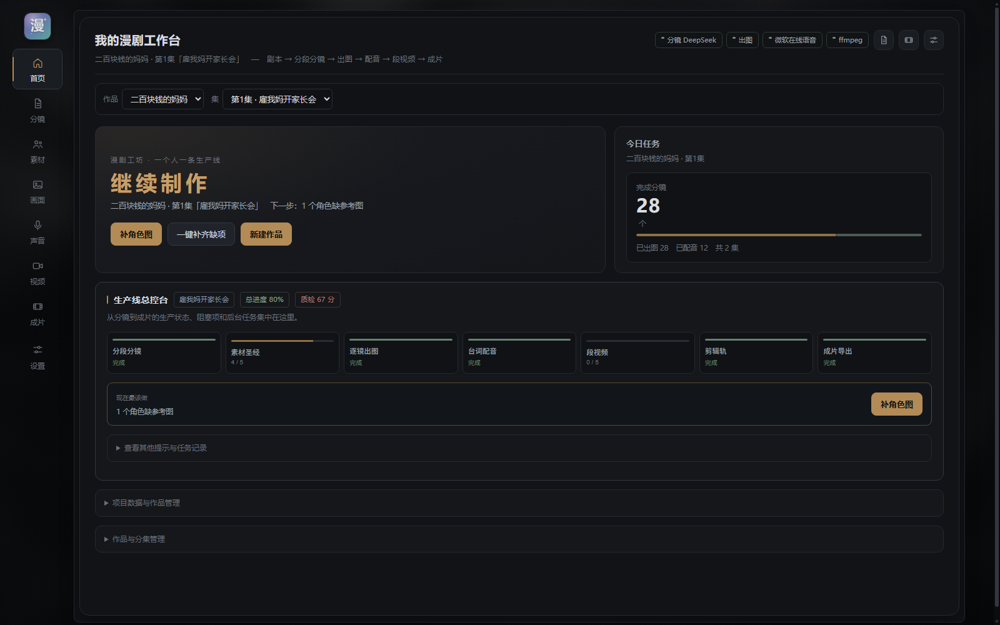
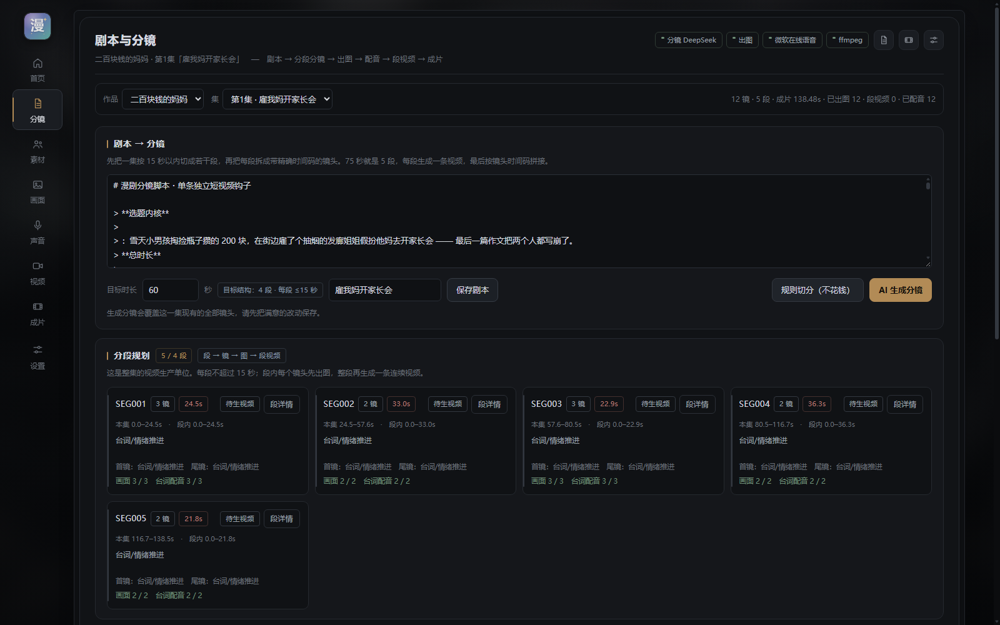
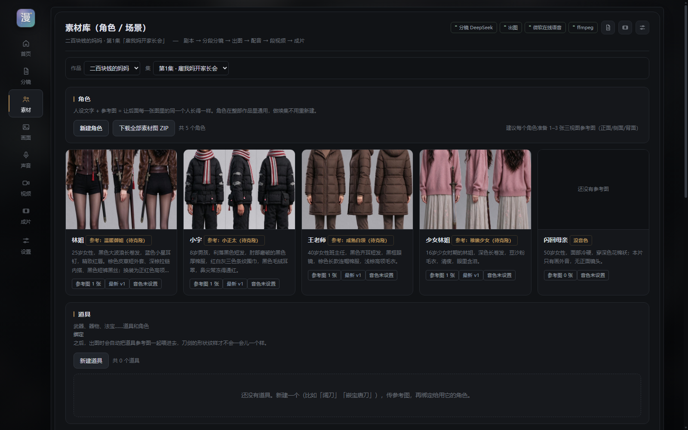
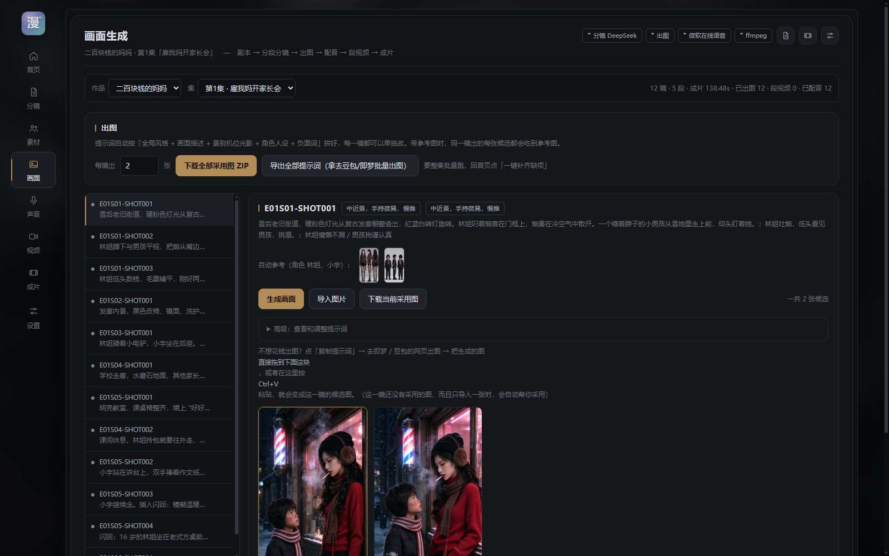
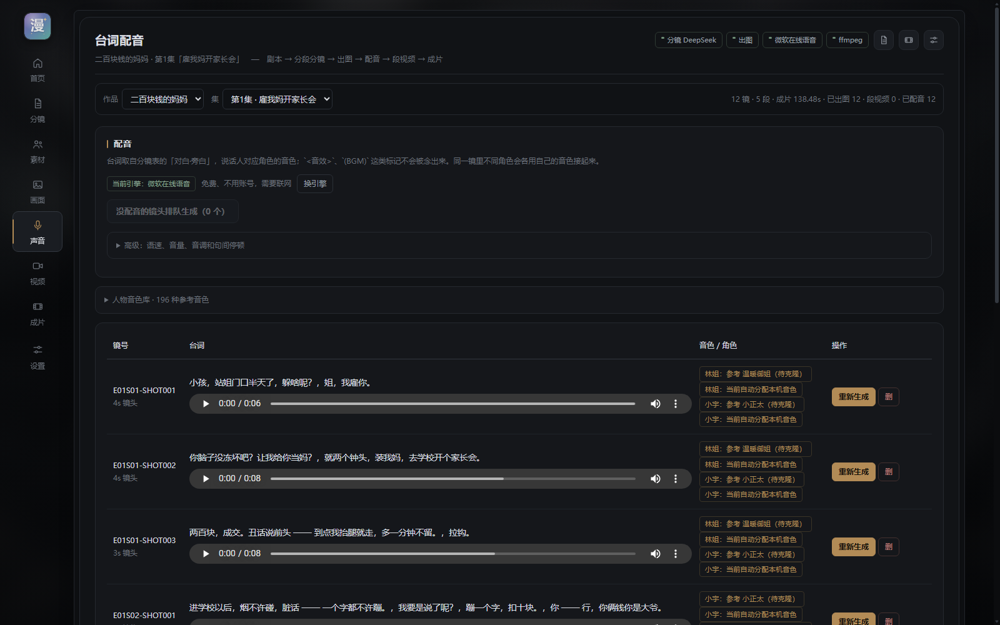
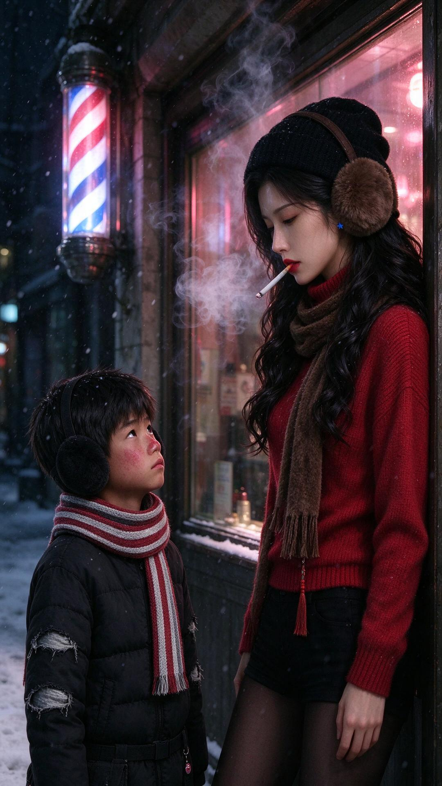
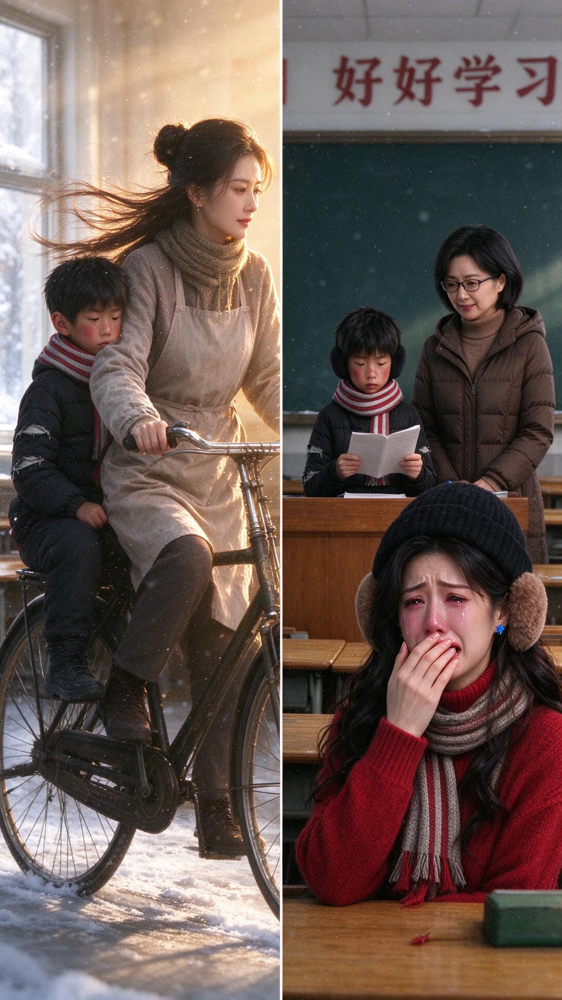

AI PRODUCT CASE STUDY · 白云青 · 2026
漫剧工坊
面向个人创作者的本地 AI 漫剧生产工作台。把剧本、分镜、角色一致性、配音、段视频和剪辑导出，整理成一条可操作、可追溯、可返工的生产线。
产品设计 / 交互设计 / AI 工作流 / 开发实现01 · PROBLEM
生成不是终点，生产流程才是
个人漫剧创作者需要在多个工具之间手工传递剧本、分镜、素材与音频。真正影响效率的不是单个模型质量，而是工具断裂、角色漂移、生成顺序错误和任务状态丢失。
我要做的不是一个“模型合集”，而是一个始终知道当前缺什么、下一步做什么的单一工作台。
02 · PRODUCT FLOW
七个阶段，一条顺序明确的生产线
剧本 → 15 秒拆段 → 时间码分镜 → 资产引用生图 → 配音 → 段视频 → 成片剪辑。首页以总控台呈现进度、缺项和下一步。

03 · SEGMENT-FIRST
先拆 15 秒段，再拆镜头
75 秒被规划为 5 个可生成、可审核的生产单元。每段内部再拆成 5–7 个带精确时间码的镜头。
- 控制模型调用成本
- 保持前后镜头动作连续
- 只重做出问题的一段

04 · CONSISTENCY
角色一致性是一条资产引用链
角色、服装、道具和场景在素材库中形成可引用资产，每个镜头记录引用版本。提示词负责执行，素材血缘负责可解释和可返工。
- 角色与服装参考逐镜绑定
- Hard Lock 固定脸型、发型、服装和指定道具
- 未登记武器时禁止模型自行添加

05 · CORRECT ORDER
先生图、再配音、再生视频
视频长度、口型与情绪都受声音影响。先锁定图片和配音，再以采用图、音频和动作提示生成每段视频，最后进入独立剪辑轨。


06 · EVIDENCE
镜头图和声音已经形成可继续生产的素材
样例作品共 12 镜，全部完成采用图和配音；本地参考音色共 196 条，支持搜索、试听与角色绑定。这里展示图片与生产状态，不把现阶段拼接成片当作视频生成能力。


07 · SCOPE
边界清楚，取舍可解释
当前范围
- 单人、本地运行，不依赖登录和云数据库
- 图片与段视频可外部导入
- 参考音色与可合成音色明确区分
- 剪辑辅助保留人工确认
暂不做的内容
- 多人协作、手机端和商业部署
- 未经授权的声音克隆
- 把参考音频循环播放伪装成配音
- 宣称尚未接入的 RAG 或全自动剪辑
08 · REFLECTION
把不确定性收进产品流程
这个项目让我练习的不是“调用多少模型”，而是如何把生成式 AI 的不确定性，收进一条可操作、可验证、可解释的产品流程。
下一步将用真实创作者测试拆段与返工的认知负担，衡量完成时间、返工率和放弃点，再决定声音克隆、视频模型和自动剪辑的优先级。